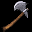
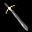
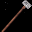
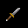

Las armas son fundamentales a la hora de batallar, algunas se pueden comprar en comercios y otras solo se pueden fabricar mediante herrería o carpintería.
Armas con Poder Mágico:
| IMAGEN |
NOMBRE |
INCREMENTO DEL ATAQUE MáGICO |
HECHIZOS AFECTADOS POR EL INCREMENTO DEL ATAQUE MáGICO |
ATAQUE FíSICO MíN/MáX |
PRECIO |
CLASES PERMITIDAS |
 |
Vara de Fresno |
+22% |
Todos los de ataque mágico. |
1 / 1 |
800 |
Mago |
 |
Bastón Nudoso |
+27% |
Todos los de ataque mágico. |
1 / 1 |
2500 |
Mago |
 |
Báculo Engarzado |
+34% |
Todos los de ataque mágico. |
1 / 1 |
13000 |
Mago |
 |
Laúd Elfico |
+4% |
Todos los hechizos que causen daño, no cura. |
1 / 1 |
11000 |
Bardo |
| |
Amuleto Ligero |
0% |
- |
- |
2000 |
Bardo, Clérigo, Druida y Mago |
 |
Flauta Elfica |
+4% |
Todos los hechizos que causen daño, no cura. |
1 / 1 |
10000 |
Druida |
Armas Cuerpo a Cuerpo:
| IMAGEN |
NOMBRE |
DAñO MíN/MáX |
PRECIO |
CLASES PERMITIDAS |
 |
Horquilla |
1 / 2 |
70 |
Ladrón, Trabajador, Guerrero, Paladín y Bandido |
 |
Garrote |
1 / 3 |
100 |
Ladrón, Trabajador, Guerrero, Paladín, Bandido, Clerigo y Asesino |
 |
Espada Larga |
1 / 8 |
210 |
Trabajador, Guerrero, Paladín, Bandido, Clerigo y Asesino |
 |
Mayal Triple |
1 / 5 |
140 |
Ladrón, Trabajador, Guerrero, Paladín, Bandido, Clerigo y Asesino |
|  |
Hacha |
2 / 6 |
140 |
Trabajador, Guerrero, Paladín y Bandido |
|  |
Espada Dos Manos |
4 / 9 |
1120 |
Ladrón, Trabajador, Guerrero, Paladín y Bandido |
 |
Martillo de Guerra |
6 / 11 |
2310 |
Ladrón, Trabajador, Guerrero, Paladín, Bandido, Clerigo y Asesino |
|
 |
Cimitarra |
6 / 13 |
3500 |
Ladrón, Guerrero, Paladín, Bandido, Clérigo, Asesino, Bardo y Trabajador |
 |
Katana |
5 / 15 |
3010 |
Ladrón, Guerrero, Paladín, Bandido, Clerigo, Asesino, Trabajador |
|  |
Mazo del Juicio |
5 / 16 |
4100 |
Bandido, Asesino, Clérigo y Paladín |
 |
Espada Vikinga |
6 / 17 |
4200 |
Trabajador, Guerrero y Bandido |
 |
Hacha de Bárbaro |
6 / 19 |
4690 |
Trabajador, Guerrero, Paladín y Bandido |
 |
Hacha de Guerra Dos Filos |
7 / 20 |
5950 |
Guerrero, Paladín y Clerigo |
 |
Hacha Larga de Guerra |
10 / 18 |
6300 |
Guerrero, Paladín y Bandido |
 |
Espada de Plata |
13 / 20 |
36200 |
Guerrero y Paladín |
 |
Espada Mata Dragones |
100 / 100 |
188000 |
Todas |
Armas Cuerpo a Cuerpo con Posibilidad de Apuñalar:
| IMAGEN |
NOMBRE |
DAñO MíN/MáX |
PRECIO |
CLASES PERMITIDAS |
 |
Daga (Newbie) |
1 / 3 |
- |
Todas |
|  |
Daga |
1 / 2 |
140 |
Todas |
|
Daga Envenenada |
2 / 3 |
350 |
Todas |
|
Daga +1 |
2 / 4 |
490 |
Todas |
 |
Daga +2 |
3 / 6 |
1960 |
Todas |
 |
Daga +3 |
4 / 7 |
2660 |
Todas |
 |
Daga +4 |
5 / 8 |
3500 |
Asesino y Bardo |
 |
Espada Corta |
1 / 5 |
1050 |
Todas |
Armas Cuerpo a Cuerpo que sirven como Herramientas de Trabajo:
| IMAGEN |
NOMBRE |
DAñO MíN/MáX |
PRECIO |
CLASES PERMITIDAS |
 |
Caña de Pescar |
1 / 1 |
200 |
Todas |
 |
Hacha de Leñador |
2 / 3 |
350 |
Todas |
 |
Piquete de Minero |
2 / 3 |
210 |
Todas |
 |
Serrucho |
1 / 2 |
140 |
Todas |
 |
Martillo de Herrero |
2 / 2 |
140 |
Todas |
 |
Hacha de Leña Elfica |
3 / 8 |
1750 |
Todas |
|
Red de Pesca |
3 / 8 |
1750 |
Todas |
Armas de Proyectiles:
| IMAGEN |
NOMBRE |
DAñO MíN/MáX |
PERFORACIóN |
PRECIO |
CLASES PERMITIDAS |
 |
Arco Simple |
1 / 4 |
- |
92 |
Todas menos Mago y Druida |
 |
Arco Simple Reforzado |
2 / 4 |
4 |
438 |
Todas menos Mago y Druida |
 |
Arco Compuesto |
4 / 10 |
- |
1080 |
Bardo, Guerrero, Paladín, Trabajador, Bandido, Clerigo, Ladrón y Asesino |
 |
Arco Compuesto Reforzado |
5 / 10 |
8 |
1788 |
Guerrero, Ladrón y Bandido |
 |
Arco de Cazador |
6 / 11 |
12 |
3000 |
Guerrero |
 |
Cuchillas |
1 / 2 |
- |
70 |
Ladrón |
Municiones para Armas de Proyectiles:
| IMAGEN |
NOMBRE |
DAñO MIN/MAX |
PRECIO |
CLASES PERMITIDAS |
 |
Flecha |
1 / 3 |
16 |
Todas menos Mago y Druida |
 |
Flecha +1 |
1 / 4 |
10 |
Guerrero y Ladrón |
 |
Flecha +2 |
1 / 5 |
16 |
Guerrero y Ladrón |
 |
Flecha +3 |
1 / 6 |
23 |
Guerrero y Ladrón |
|
|
 Ataque Mágico:
Ataque Mágico: